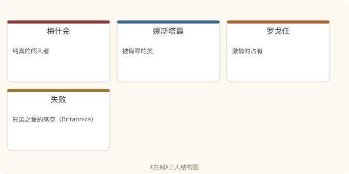

白痴
一、基本信息
| 作者 | 陀思妥耶夫斯基 |
|---|---|
| 成书/出版 | 1868—1869年连载发表（Britannica：published in Russian as Idiot in 1868–69） The Idiot (novel by Dostoyevsky) — Encyclopaedia Britannica（百科全书） |
| 国别/地区 | 俄国 |
| 时代 | 近代 · 19世纪 |
| 体裁 | 长篇小说 |
| 语言 | 俄语 |

《白痴》三人结构图（主题·结构图）
二、创作背景
Britannica：'The story involves the unsettling effect of the primitive Prince Myshkin on the sophisticated, conservative Yepanchin family'（'原始'的梅什金公爵给世故保守的叶潘钦家带来的不安）。
Britannica：梅什金的信息——'message of service, compassion, and brotherly love finally fails'（服务、同情与兄弟之爱的讯息最终失败）。
三、内容脉络
梅什金公爵自瑞士疗养归彼得堡——纯真者闯入名利场（通说）。
娜斯塔霞·菲利波夫娜的生日夜：十万元焚烧一幕（通说待核）。
结局：罗戈任杀死娜斯塔霞，梅什金重归痴呆（通说待核）。
四、主要人物表
| 人物 | 身份 | 说明 |
|---|---|---|
| 梅什金公爵 | '白痴' | 纯真的局外人（Britannica 语境） |
| 娜斯塔霞 | 没落贵族之女 | 被侮辱者（通说） |
| 罗戈任 | 商人之子 | 激情的占有者（通说） |
五、主题与艺术特点
- 基督式的纯真在世俗中的失败（Britannica：his message……finally fails）。
- 美将拯救世界？——争议命题（通说待核）。
- 金钱与羞辱的剧场（通说）。
六、影响与评论
- Britannica：1868—69年连载；梅什金的'不安效应'为全书枢纽。
The Idiot (novel by Dostoyevsky) — Encyclopaedia Britannica（百科全书） - '白痴'式的圣愚传统在俄国文学中的再现（通说待核）。
The Idiot (novel by Dostoyevsky) — Encyclopaedia Britannica（百科全书）
七、阅读建议
难点
- 人物众多——先画人物表。
- 十九世纪彼得堡社交礼仪。
- 荣如德译本（上海译文出版社，通说待核）。
- 耿济之译本（人民文学出版社，通说待核）。
可与《罪与罚》对读：理性犯罪 vs 纯真受难。
八、待核实
- 生日夜焚烧十万卢布情节核对。
- '美将拯救世界'原文出处核对。
- 癫痫发作描写与作者自病经历的关系待核。
本页主要来源
- The Idiot (novel by Dostoyevsky) — Encyclopaedia Britannica（百科全书）
- Fyodor Dostoyevsky — Encyclopaedia Britannica (by Gary Saul Morson)（百科全书）
陀思妥耶夫斯基的其他收录作品：罪与罚